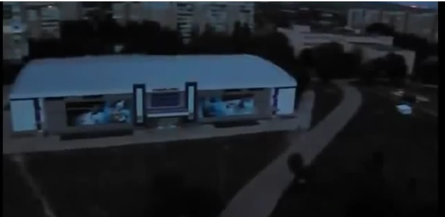
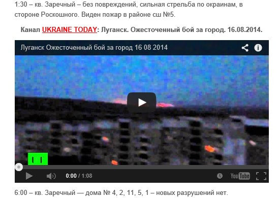
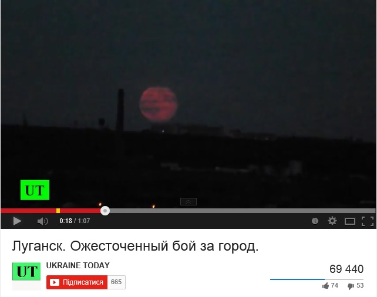
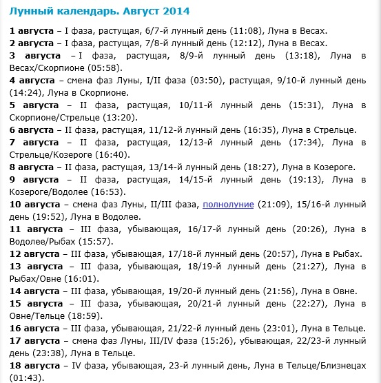

Видео из Луганска, снятое месяц назад, представили как актуальное
На новостных ресурсах и в социальных сетях активно распространяется видео с заголовком «Луганск.Ожесточенный бой за город.16.08.2014», на котором снят обстрел украинского города Луганска.
Изначально это видео было размещено на Youtube канале Ukraine Today (UT) 16 августа с заголовком «Луганск.Ожесточенный бой за город».Отметим, что этот канал не имеет никакого отношения к каналу UA Today («Україна сьогодні»), который был недавно создан холдингом «Группа 1+1 медиа».
В пояснении к видео сказано: «Начиная приблизительно с 21.00 идут уличные бои ближе к центру города, украинские штурмовые отряды прорываются к центру Луганска».
https://www.youtube.com/watch?v=B0oK3mu4Q6o
Однако данное видео было снято как минимум месяц назад.К примеру, его можно найти в Youtube с датой публикации — 14 июля 2014 года (видеосюжет из Луганска начинается с 1:34):
https://www.youtube.com/watch?v=vVZDas1nV1M#t=93
Впрочем, обнаружить несоответствие видео указанной дате «16 августа» можно и без оригинала этого сюжета.Начиная с 0:14 минуты в кадре видна полная луна.
А в ночь на 16 августа луна была не полной, а убывающей.Полнолуние в августе было 10 числа, в июле — 12 числа, в июне — 13 числа.
Posted On: 2014-08-16T21:00:00




Content Date: 2014-08-16
Download Date: 2021-07-16
Document ID: L0C04FFPU